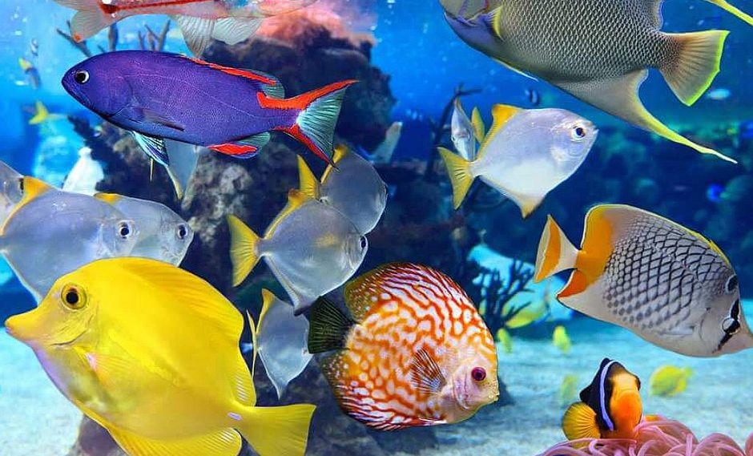
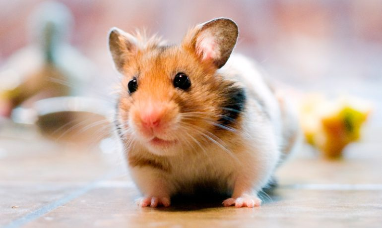

ANIMALES
GATOS
Felis silvestris catus

El gato doméstico (Felis silvestris catus), llamado popularmente gato, y de forma coloquial minino, michino,michi, micho, mizo, miz,morroño o morrongo, entre otros nombres, es un mamífero carnívoro de la familia Felidae. Es una subespecie domesticada por la convivencia con el ser humano.
El nombre actual en muchas lenguas proviene del latín vulgar catus. Paradójicamente, catus aludía a los gatos salvajes, mientras que los gatos domésticos, en latín, eran llamados felis.
Como resultado de mutaciones genéticas, cruzamiento y selección artificial, hay numerosas razas. Algunas, como la raza Sphynx o la Peterbald están desprovistas de pelo; otras carecen de cola, como los gatos de la raza Manx, y algunas tienen coloraciones atípicas, como los llamados gatos azules.
El gato se comunica a través de vocalizaciones. Las más populares son su característico maullido y el ronroneo, pero puede aullar, gemir, gruñir y bufar. Además, adopta poses o expresiones que informan, a sus congéneres, sus enemigos o sus cuidadores, de su ánimo o sus intenciones.
Junto con el perro, es el animal doméstico más popular, como mascota, como ayuda en la lucha contra roedores o ambas cosas.
Por su amplio abanico de presas potenciales, por su alta eficiencia como depredador, y por su elevado éxito reproductivo –especialmente si se suministra artificialmente alimento a las colonias sin tomar medidas adicionales para limitar su fertilidad– el gato doméstico está incluido en la lista 100 de las especies exóticas invasoras más dañinas del mundo de la Unión Internacional para la Conservación de la Naturaleza.
Ir al artículo "Gatos"
Ir al artículo "Perros"
Ir al artículo "Peces"
Ir al artículo "Conejos"
Ir al artículo "Caballos"
Ir al artículo "Hamsters"
PERROS
Canis lupus familiaris
El perro (Canis lupus familiaris), llamado perro doméstico o can,y en algunos lugares coloquialmente llamado chucho, tuso, choco, entre otros; es un mamífero carnívoro de la familia de los cánidos, que constituye una subespecie del lobo (Canis lupus). En 2001, se estimó que había 400 millones de perros en el mundo. Su tamaño (o talla), su forma y pelaje es muy diverso según la raza. Posee un oído y olfato muy desarrollados, siendo este último su principal órgano sensorial. Su longevidad media es de 10 a 13 años, dependiendo de la raza.
El perro doméstico proviene de un ancestro o grupo ancestral común que data de hace aproximadamente treinta mil años y desde entonces se ha extendido a todas partes del mundo. Los primeros restos fósiles de perros enterrados junto con humanos fueron encontrados en Israel y datan de hace unos doce mil años. Desde entonces, los perros y los humanos han evolucionado conjuntamente, tanto en las culturas africanas y euroasiáticas, como en las que poblaron América y se mantuvieron sin contacto con aquellas hasta el siglo XV. Los perros comparten el entorno, los hábitos y el estilo de vida humanos, como las dietas ricas en cereales y almidón. La alimentación inadecuada, así como el uso de antibióticos, son la causa del desarrollo de muchas enfermedades inflamatorias e inmunológicas. Unas cuatrocientas enfermedades del perro tienen una equivalente humana, destacando especialmente la enfermedad de Alzheimer y otros trastornos neurológicos, así como cánceres, enfermedades autoinmunes y enfermedades cardiovasculares.
Tienen una gran relación con los humanos, entre tales relaciones se incluyen fungir como animales de compañía, animales de guardia, perros de trabajo, perros de caza, perros de agua, galgos de carrera, perros guía, perros pastores o perros boyeros.
Ir al artículo "Gatos"
Ir al artículo "Perros"
Ir al artículo "Peces"
Ir al artículo "Conejos"
Ir al artículo "Caballos"
Ir al artículo "Hamsters"
PECES
Pisces

Los peces (del latín pisces) son animales vertebrados primariamente acuáticos, generalmente ectotérmicos (regulan su temperatura a partir del medio ambiente) y con respiración por branquias. Suelen estar recubiertos por escamas, y están dotados de aletas, que permiten su movimiento continuo en los medios acuáticos, y branquias, con las que captan el oxígeno disuelto en el agua. El grupo Pisces no es un taxón porque sería parafilético. Los peces son abundantes tanto en agua salada como en agua dulce, pudiéndose encontrar especies desde los arroyos de montaña (por ejemplo, el gobio), así como en lo más profundo del océano (por ejemplo, anguilas tragonas).
Los alimentos preparados con pescado son una importante fuente de alimentación para los seres humanos. Pueden ser grandes partir de ejemplares silvestres, o criados de manera similar al ganado (véase acuicultura). Hoy en día la llamada pesca deportiva cada día se vuelve una actividad más popular. Los peces han tenido un papel importante en muchas culturas a través de la historia, que van desde las deidades religiosas a temas de libros y películas.
La especialidad de la zoología que se ocupa específicamente de los peces se denomina ictiología.
Ir al artículo "Gatos"
Ir al artículo "Perros"
Ir al artículo "Peces"
Ir al artículo "Conejos"
Ir al artículo "Caballos"
Ir al artículo "Hamsters"
CONEJOS
Oryctolagus cuniculus
El conejo común o conejo europeo (Oryctolagus cuniculus) es una especie de mamífero lagomorfo de la familia Leporidae, y el único miembro actual del género Oryctolagus. Mide hasta 50 cm y pesa hasta 2.5 kilos. Ha sido introducido en varios continentes y es la especie que se utiliza en la cocina y en la cunicultura. Está incluido en la lista 100 de las especies exóticas invasoras más dañinas del mundo de la Unión Internacional para la Conservación de la Naturaleza. Su introducción en Australia es uno de los capítulos más importantes del deterioro causado por especies exóticas invasoras.
Ir al artículo "Gatos"
Ir al artículo "Perros"
Ir al artículo "Peces"
Ir al artículo "Conejos"
Ir al artículo "Caballos"
Ir al artículo "Hamsters"
HAMSTERS
Cricetinae

Los cricetinos (Cricetinae) son una subfamilia de roedores, conocidos comúnmente como hámsteres (un germanismo). Se han identificado diecinueve especies actuales, agrupadas en siete géneros. La mayoría son originarias de Oriente Medio y del sureste de los Estados Unidos. Todas las especies se caracterizan por las bolsas expansibles, llamadas abazones, ubicadas en el interior de la boca y que van desde las mejillas hasta los hombros. Al ser muy fáciles de criar en cautividad, son ampliamente usados como animales de laboratorio y como mascotas.
Ir al artículo "Gatos"
Ir al artículo "Perros"
Ir al artículo "Peces"
Ir al artículo "Conejos"
Ir al artículo "Caballos"
Ir al artículo "Hamsters"
Ir al Titulo Principal